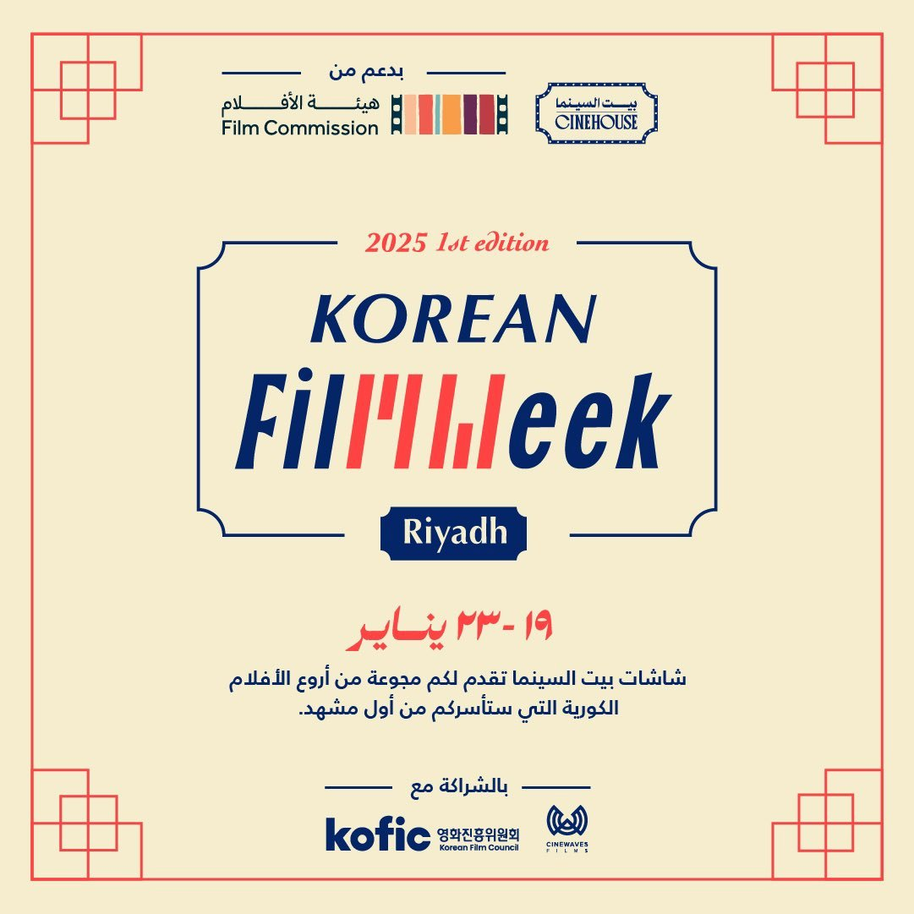
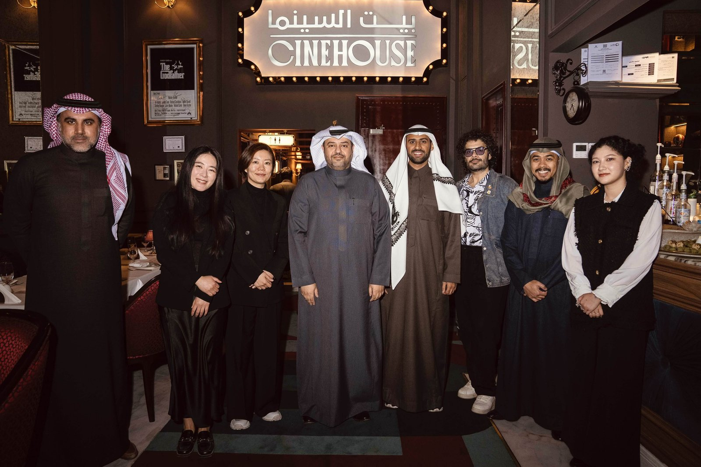
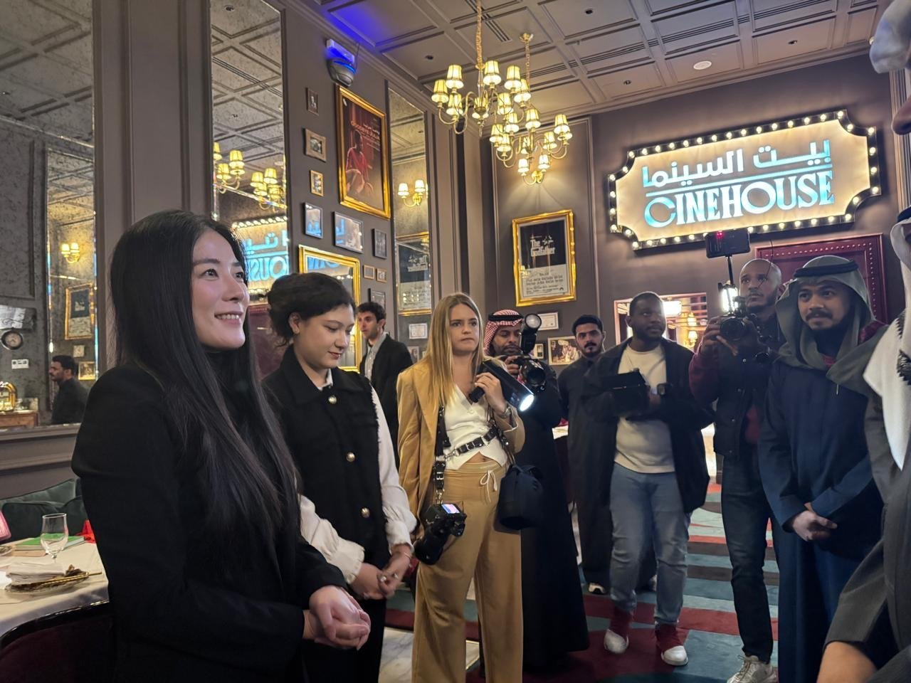
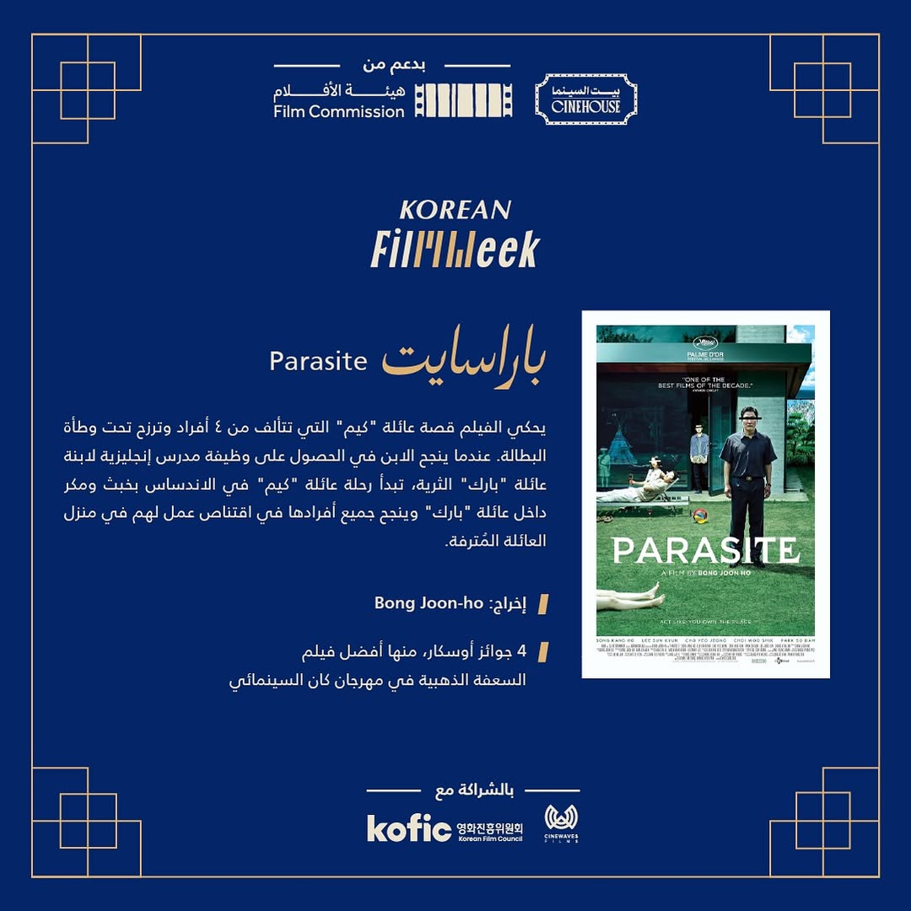
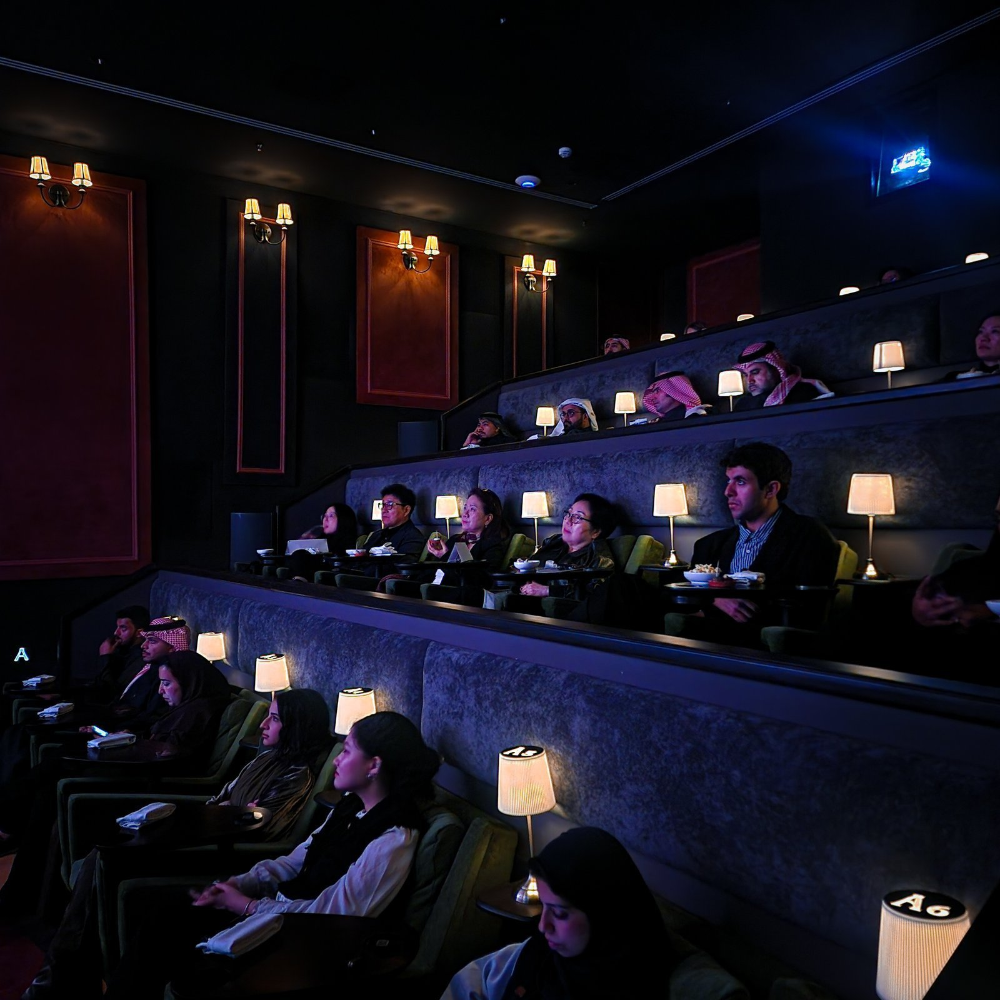
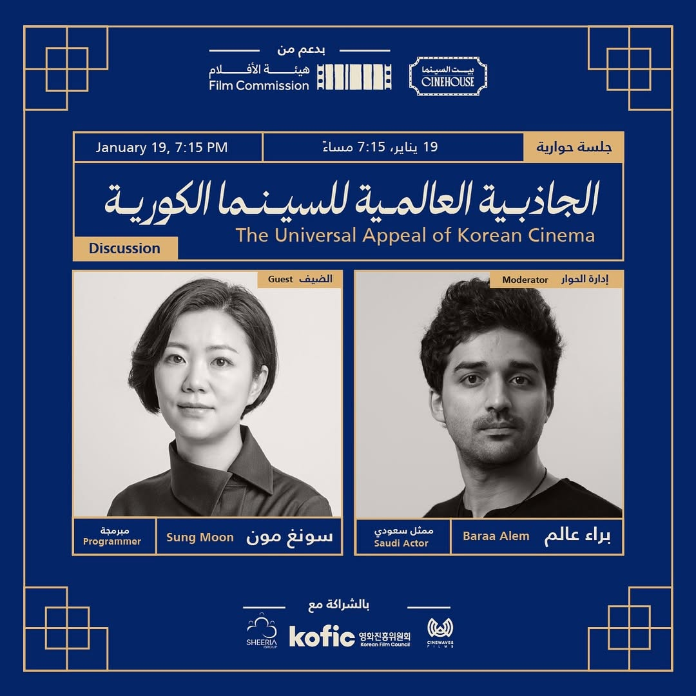
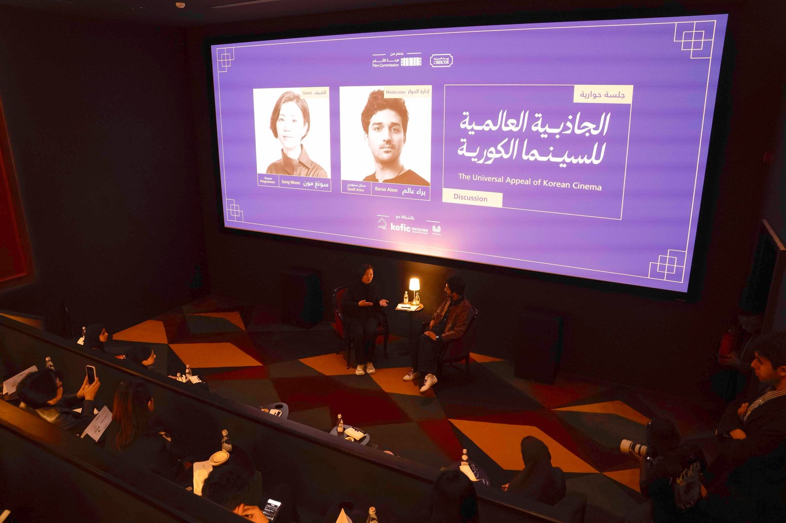
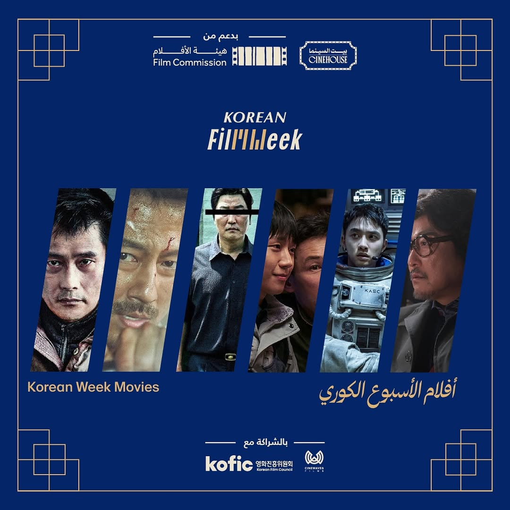

2025년 1월 19일부터 23일까지 사우디아라비아 리야드의 씨네하우스(CINEHOUSE)에서 '한국 영화 주간(Korean Film Week)'이 열렸다. 사우디필름커미션(Saudi Film Commission)이 주관하고 한국 영화진흥위원회(KOFIC)가 협력한 이번 행사는 아트 시네마 이니셔티브(Art Cinema Initiative) 일환으로 사우디 내 예술 영화의 저변 확대와 한-사우디 간 문화교류를 활성화하기 위해 마련됐다.
씨네하우스: 새로운 영화 문화의 거점
이번 영화 주간의 무대가 된 씨네하우스는 사우디 최초의 아트하우스 시네마로 2024년 10월 리야드에 문을 열었다. 사우디 영화 프로듀서 파이살 발튜르(Faisal Baltyuor)가 주도해 설립한 이 극장은 단순한 상영관을 넘어 세계 영화의 다양성을 소개하고 창작자와 관객을 연결하는 문화 허브로 자리매김하고 있다. 씨네하우스는 80석 규모의 부티크형 상영관과 레스토랑, 라운지를 갖추고 있으며 돌비 애트모스(Dolby Atmos) 사운드와 4K 레이저 프로젝션 등 최첨단 시설을 자랑한다. 발튜르는 "씨네하우스를 단순히 영화를 보는 곳이 아니라 영화인과 관객이 함께 모여 대화와 영감을 나누는 공간으로 만들고 싶다."고 강조한 바 있다.

▲ 리야드 '한국 영화 주간' 홍보 포스터 — 출처: 씨네하우스 제공
개막식과 현장 분위기
개막일인 1월 19일 리셉션 현장에서는 사우디필름커미션 위원장(CEO) 압둘라 알에이아프(Abdullah Al-Eyaf)와 레드씨영화제 대표이사(CEO) 파이살 발튜르(Faisal Baltyuor)를 비롯해 전주국제영화제 문성경 프로그래머, 사우디 배우 바라 알렘(Baraa Alem), 씨네하우스 관계자 등이 참석해 영화산업 협력과 향후 교류 가능성에 대해 다양한 대화를 나눴다. 행사가 열린 씨네하우스는 관객이 음식을 주문해 극장 안에서 즐길 수 있는 공간으로 운영되는데 이번 '한국 영화 주간'에는 라면, 떡볶이 등 한국 음식을 특별 메뉴로 제공해 색다른 경험을 선사했다.


▲ 개막식 리셉션 현장 — 출처: 씨네하우스 제공
이어 봉준호 감독의 <기생충(Parasite)>이 개막작으로 상영됐다. 사우디 문화적 특성에 따라 일부 장면이 편집됐으나 현지 관객들은 영화가 담고 있는 사회적 메시지와 서사에 깊은 공감을 표하며 뜨거운 호응을 보였다.


▲ 개막식 상영작인 '기생충' 관련 홍보 포스터 및 상영 현장 — 출처: 씨네하우스 제공
상영 후에는 전주국제영화제 문성경 프로그래머와 사우디 배우 바라 알렘(Baraa Alem)이 함께한 대담이 이어졌다. 이들은 '한국 영화의 보편적 매력(The Universal Appeal of Korean Cinema)'을 주제로 한국 영화의 세계적 매력과 사우디 관객과의 접점에 대해 심도 있는 논의를 펼쳤다.

▲ 개막식 대담 프로그램 홍보 포스터 — 출처: 씨네하우스 제공

▲ 개막식 대담 현장 — 출처: 씨네하우스 제공
문성경 프로그래머는 과거 영화진흥위원회(KOFIC) 중남미 주재원으로서 아르헨티나에서 활동한 경험을 바탕으로 한국 영화가 세계 각지에서 어떻게 받아들여져 왔는지를 사례와 함께 설명했다. 그는 특히 한국 영화가 발전해 온 과정을 짚으며 "스크린쿼터제와 같은 정부의 적극적인 지원 정책이 한국 영화산업 성장의 밑거름이 됐다"고 강조했다.
상영작 라인업
'한국 영화 주간'은 지난 몇 년간 한국 영화계의 주요 작품을 상영하며 현지 관객에게 다양한 장르적 스펙트럼을 선보였다. 봉준호 감독의 <기생충(Parasite)>을 시작으로 한국형 SF 대작인 김용화 감독의 <더 문(The Moon)>, 영화 안의 영화를 다룬 메타 시네마인 김지운 감독의 <거미집(COBWEB)>, 재난 블록버스터인 엄태화 감독의 <콘크리트 유토피아(Concrete Utopia)>, 범죄 액션 화제작인 류승완 감독의 <베테랑2(I, THE EXECUTIONER)>가 그에 해당한다.

▲ 리야드 '한국 영화 주간' 상영작 라인업 — 출처: 씨네하우스 제공
사우디 '비전 2030'과의 접점
이번 리야드에서 열린 사우디 최초의 한국 영화 주간은 사우디 영화사에서 처음으로 열린 한국 영화 행사라는 점에서 큰 의의를 지닌다. 단순한 문화 행사를 넘어 양국 간 영화 교류의 새로운 장을 열었다는 상징성을 갖는다. 이번 영화 주간은 또한 사우디 정부가 추진하는 '비전 2030(Vision 2030)'의 문화 다변화 전략과도 맞닿아 있다. 한국 영화의 보편성과 세계적 매력이 현지 관객에게 전달되며 사우디가 세계 영화산업과의 연결을 확대하고 있음을 보여준다.
아울러 2025년 2월 체결된 사우디필름커미션–한국 영화진흥위원회 파트너십 역시 이러한 흐름을 뒷받침한다. 이미 구축된 협력 기반 위에서 공동 제작, 인재 교류, 해외 유통 등 다양한 프로젝트가 추진되며 '비전 2030'이 지향하는 문화산업 다변화와도 맞물려 본격적인 시너지를 내고 있다.
사진 출처 및 참고자료
씨네하우스 홈페이지, https://www.cinehousecinema.com/
씨네하우스 인스타그램 계정(@cinehousecinema), https://www.instagram.com/cinehousecinema
씨네하우스 X 계정(@CineHouseCinema), https://x.com/cinehousecinema
Arab News (2024. 9. 26). Arthouse cinema opening soon in the heart of Saudi Arabia
Arab News (2025. 3. 29). Review: 'CineHouse' in Riyadh
Variety (2024. 9. 7). Saudi Film Pioneer Faisal Baltyuor Launches First Arthouse Cinema in Riyadh
홍해국제영화제 홈페이지, https://redseafilmfest.com/en/about-us/faisal-baltyuor/
Asharq Al-Awsat (2025. 1. 19). Korean Film Week Kicks Off in Riyadh as Film Commission Launches Art Cinema Initiative
What's On Saudi Arabia (2025. 1. 20). Check out the Korean Film Week in Riyadh